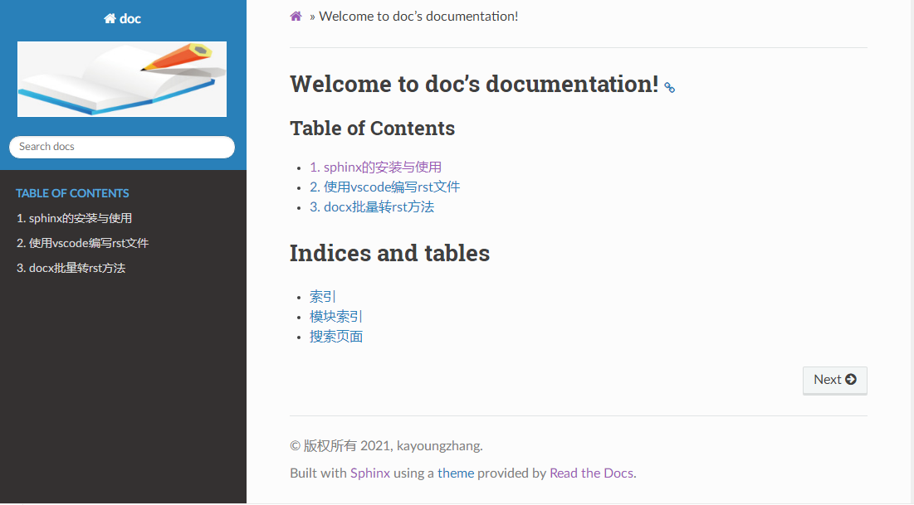

Sphinx + reST + github + ReadtheDocs编写文档¶
目录
前言¶
使用标记语言(Markup Language)写文档是当前比较流行的文档编写方式， 目前标记语言主要有两种，Markdown和reStructuredText（简称reST)。 很多开源项目的文档就是用Sphinx+reST做的，上传到github和ReadtheDocs， 通过浏览器就可以直接查看带有格式的文档了。结合网上众多教程，总结了以下使用教程。
安装软件包¶
安装 python3,并添加bin目录到环境变量中。
安装 git 软件，并添加bin目录到环境变量中。
通过pip工具安装 sphinx工具,
pip install -U Sphinx或pip install -i https://pypi.tuna.tsinghua.edu.cn/simple sphinx安装 Sphinx Themes, 这里选择 第三方主题 “Read the Docs”,
pip install sphinx sphinx-autobuild sphinx_rtd_theme或pip install -i https://pypi.tuna.tsinghua.edu.cn/simple sphinx sphinx-autobuild sphinx_rtd_theme
建立项目¶
新建文件夹，运行cmd命令行，进入此文件夹中，这里为doc_demo, 然后运行 sphinx-quickstart，之后sphinx会出现一些问题，根据情况输入即可。 这里我建立了一个doc的Project，版本是1.0，作者名为kayoungzhang， 语言为zh_CN,将source与build目录分开。
Microsoft Windows [版本 6.1.7601]
版权所有 (c) 2009 Microsoft Corporation。保留所有权利。
C:\Users\Administrator>cd doc_demo
C:\Users\Administrator\doc_demo>sphinx-quickstart
Welcome to the Sphinx 3.5.4 quickstart utility.
Please enter values for the following settings (just press Enter to
accept a default value, if one is given in brackets).
Selected root path: .
You have two options for placing the build directory for Sphinx output.
Either, you use a directory "_build" within the root path, or you separate
"source" and "build" directories within the root path.
> Separate source and build directories (y/n) [n]: y
The project name will occur in several places in the built documentation.
> Project name: doc
> Author name(s): kayoungzhang
> Project release []: 1.0
If the documents are to be written in a language other than English,
you can select a language here by its language code. Sphinx will then
translate text that it generates into that language.
For a list of supported codes, see
https://www.sphinx-doc.org/en/master/usage/configuration.html#confval-language.
> Project language [en]: zh_CN
Creating file C:\Users\Administrator\doc_demo\source\conf.py.
Creating file C:\Users\Administrator\doc_demo\source\index.rst.
Creating file C:\Users\Administrator\doc_demo\Makefile.
Creating file C:\Users\Administrator\doc_demo\make.bat.
Finished: An initial directory structure has been created.
You should now populate your master file C:\Users\Administrator\doc_demo\source\
index.rst and create other documentation
source files. Use the Makefile to build the docs, like so:
make builder
where "builder" is one of the supported builders, e.g. html, latex or linkcheck.
C:\Users\Administrator\doc_demo>
doc_demo文件夹中出现一些文件：
source和build分别是源文件和编译生成文件的存放目录，
Makefile和make.bat分别是Linux和Windows下的makefile。
conf.py是配置文件，index.rst是主框架文件，_static是静态文件存放目录，_templates是模板存放目录。
conf.py配置¶
主题样式 在conf.py中,屏蔽默认的主题，并添加新的主题
# html_theme = 'alabaster'
import sphinx_rtd_theme
html_theme = "sphinx_rtd_theme"
LOGO设置,准备好logo图片
html_logo = './logo.png'
不显示源文件链接
html_show_sourcelink = False
支持markdown编辑
安装myst-parser包及recommonmark包 (pip install myst-parser，pip install recommonmark)
extensions = ['myst_parser']
from recommonmark.parser import CommonMarkParser
source_parsers = {
'.md': CommonMarkParser,
}
source_suffix = ['.rst', '.md']
支持markdown 表格
安装sphinx-markdown_tables包(pip install sphinx-markdown_tables)
extensions = [‘myst_parser’, ‘sphinx_markdown_tables’]
创建rst文件¶
在source文件夹中创建sphinx.rst和vscode.rst文档，同时新建文件夹docxtorst.rst, 并在其中创建docxtorst.rst文档。并在其中添加标题和内容。
index.rst中TOC tree设置¶
.. toctree::
:maxdepth: 2
:caption: Table of Contents
:titlesonly:
:numbered:
sphinx
vscode
docxtorst/docxtorst
Note
maxdepth -> 目录中可显示标题的最多级数，不添加则会显示文档中所有标题
caption -> toctree显示标题
titleonly ->只想显示toctree文档标题，而不显示同一级别的其他标题
numbered -> 给罗列的文档标题进行显示标号，子目录也会自动编号
sphinx、vscode ->当前index.rst文档所在目录下的sphinx.rst和vscode.rst文档
docxtorst/docxtorst -> docxtorst文件夹下的docxtorst.rst文档
运行 make html 编译生成html文件,并在build文件夹的html文件夹下 打开html文件即可看到具体的网页实现:
C:\Users\Administrator\doc_demo>make html
Running Sphinx v3.5.4
loading translations [zh_CN]... done
loading pickled environment... done
myst v0.14.0: MdParserConfig(renderer='sphinx', commonmark_only=False, dmath_all
ow_labels=True, dmath_allow_space=True, dmath_allow_digits=True, dmath_double_in
line=False, update_mathjax=True, enable_extensions=['dollarmath'], disable_synta
x=[], url_schemes=None, heading_anchors=None, html_meta=[], footnote_transition=
True, substitutions=[], sub_delimiters=['{', '}'], words_per_minute=200)
building [mo]: targets for 0 po files that are out of date
building [html]: targets for 1 source files that are out of date
updating environment: [config changed ('source_parsers')] 4 added, 0 changed, 0
removed
reading sources... [100%] vscode
looking for now-outdated files... none found
pickling environment... done
checking consistency... done
preparing documents... done
Building prefix dict from the default dictionary ...
Loading model from cache C:\Users\ADMINI~1\AppData\Local\Temp\jieba.cache
Loading model cost 1.264 seconds.
Prefix dict has been built succesfully.
writing output... [100%] vscode
generating indices... genindex done
writing additional pages... search done
copying images... [100%] docxtorst/media/docxto015.png
copying static files... done
copying extra files... done
dumping search index in Chinese (code: zh)... done
dumping object inventory... done
build succeeded.
The HTML pages are in build\html.
具体效果图：
{kind=link}
github或gitee托管¶
删除build文件夹。
在GitHub创建一个仓库，然后与本地doc文件夹进行同步，并添加到远程仓库。
ReadtheDocs托管¶
在 Read the Docs 上注册一个账号, 登陆后点击 “Import”.给该文档项目填写一个名字比如 “doc”, 并添加你在GitHub上面的工程HTTPS链接, 选择仓库类型为Git, 其他项目根据自己的需要填写,点击 “Create”，创建完后会自动激活Webhooks， 不用再去GitHub设置，从此只要你往这个仓库push内容，readthedoc上面的文档就会自动更新。 可参考readthedocs 官方文档。